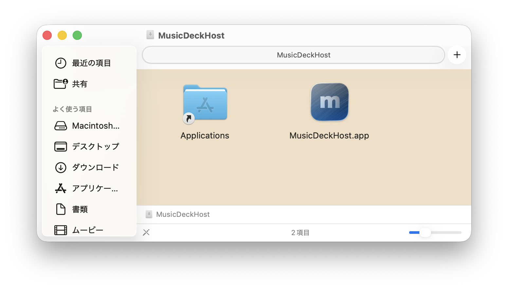

MACOS DOWNLOAD
MusicDeck for Macを、
あなたのMacへ。
DMGファイルをダウンロードして、かんたんにインストールできます。
DMGをダウンロード↓DMGファイルを確認しています…
INSTALL GUIDE
インストールは、
ドラッグするだけ。
ダウンロードしたDMGを開き、アプリをApplicationsフォルダへ移動してください。
- 01
DMGファイルを開く
ダウンロードしたファイルをダブルクリックします。
- 02
アプリをApplicationsへ
MusicDeckHost.appをApplicationsフォルダにドラッグします。
- 03
アプリを起動する
ApplicationsからMusicDeckHostを開いて、iPhoneと接続します。
WHAT YOU'LL SEE
この画面が開いたら、
アプリを移動。
MusicDeckHost.appをApplicationsフォルダにドラッグ&ドロップしてください。
